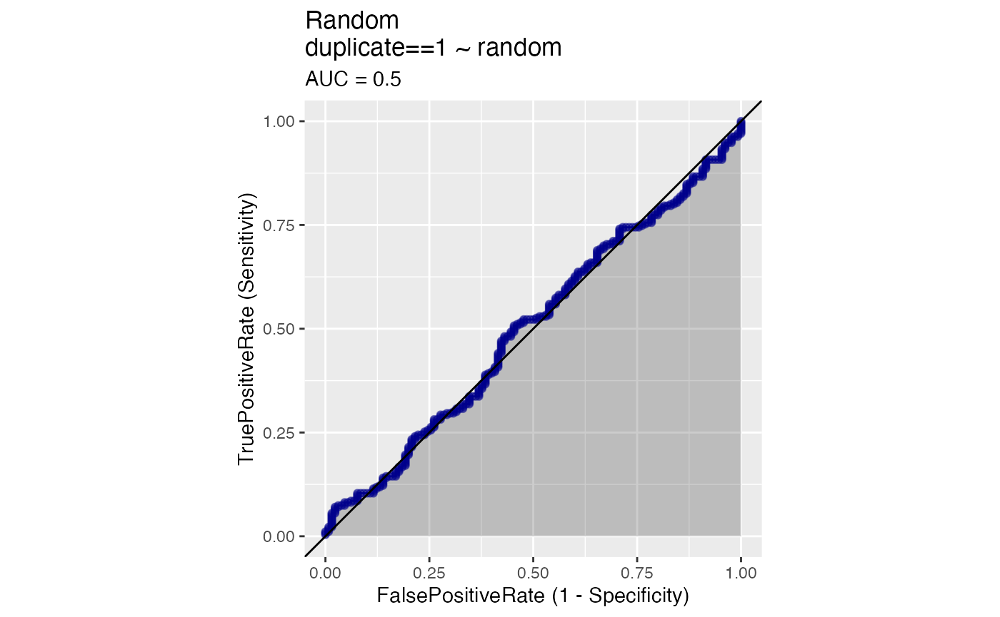
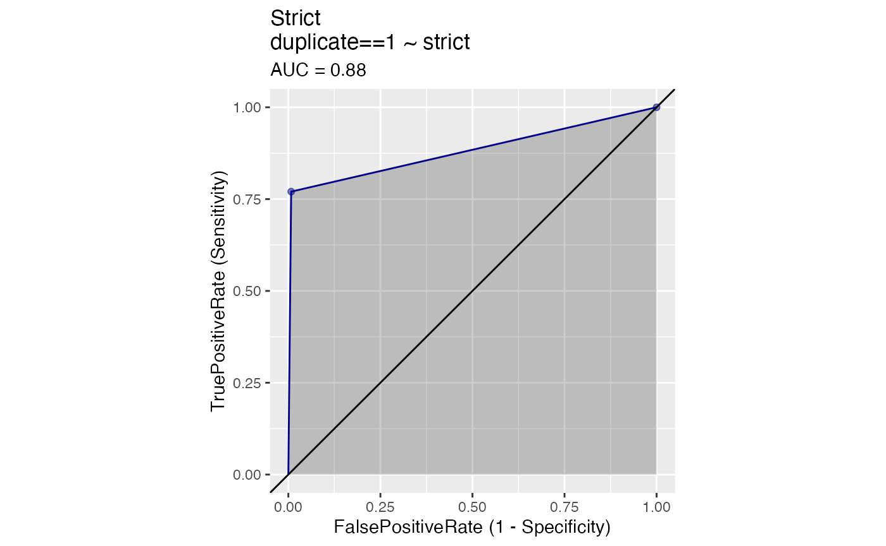
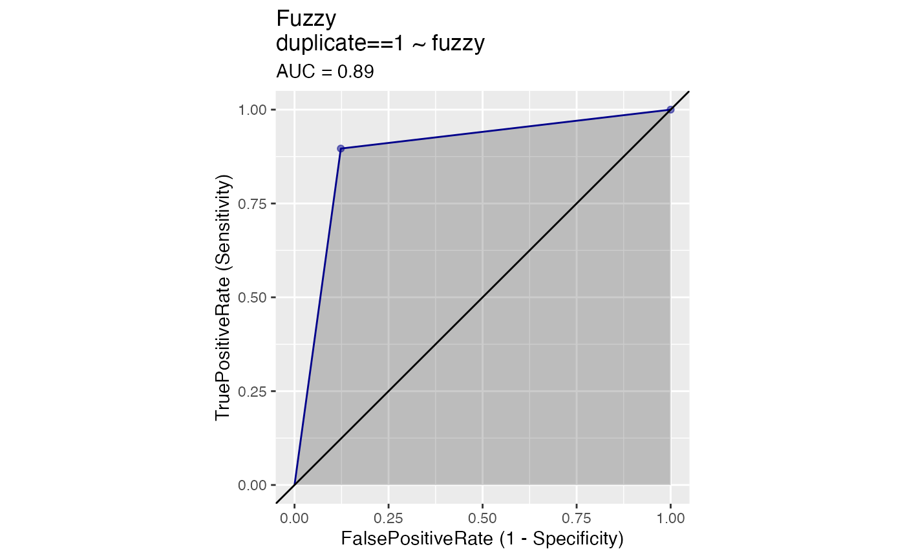
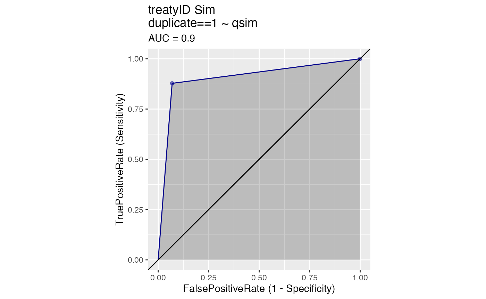
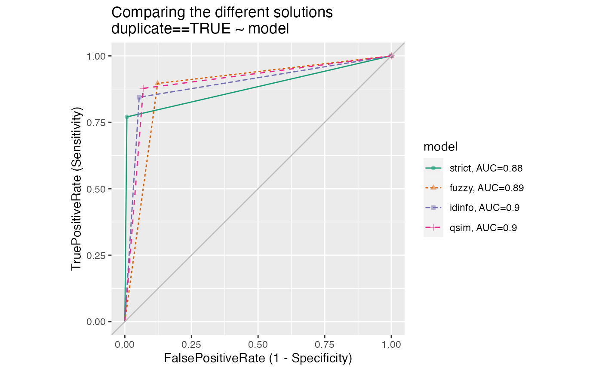

Outlining the problem
One of the central problems in ensembled data packages is setting equivalences between observations from different datasets. This is a central problem because it is what enables us to relate datasets to one another.
What is required is some classificatory scheme so that same is recognised as same and different observations are recognised as different. In many cases, it is useful to have some kind of registry of unique units that existing and, importantly, new data can be read against.
There are several important features of such a registry that, while not required are certainly very helpful:
- Authoritative: the registry should be a singular source
- Comprehensivity: the registry should ideally cover all possible units
- Succinct: the registry codes should be as short as possible
- Intelligible: the registry codes should be as meaningful for humans as possible
For some databases, unique identifiers are not too much of a problem because there exists a relatively comprehensive, authoritative, succinct, and intelligible registry. An example of this is the central states database in the manystates package. Here we can rely on ISO-3166 alpha-3 codes for most modern states, complementing them with COW or other codes for more historical states. This combined registry is made available through the manystates::code_states() function.
But we are not aware of comprehensive, authoritative, succinct, and intelligible registry of treaties. To solve this problem, we need to think both about how observations might be coded and what this codes might represent.
Setting up the problem
To test different solutions to the problem, we construct a sample of treaty titles from three different datasets in the manyenviron::agreements database. Let’s take only titles of treaties established in a particular decade, the 1980s, so that we can increase the probability of matches.
library(manyenviron)
samples <- lapply(manyenviron::agreements, function(x) x[x$Beg > "1990-01-01" & x$Beg < "2000-01-01", ])
titles <- unlist(purrr::map(samples, "Title"))
dates <- unlist(purrr::map(samples, "Beg"))
sample <- cbind.data.frame(titles, dates)The sample has been hand coded so that the exact number of agreements that are duplicates or linked to one another is known. We hand coded 400 agreements from the sample to compare duplicates identification.
Options for solutions
A perfect match
If we use the hand coded duplicates to correctly identify all duplicates in the sample, we get a perfect match! That is, we identify all true positives and no false positives. The rates of true positives and false positives are represented the receiver operating characteristics (ROC) graph below. The area under the curve (AUC score), in dark grey, in the graph is maximized (equals 1).
library(WVPlots)
WVPlots::ROCPlot(agreements, "duplicate", "duplicate", 1, title = "Duplicates Match")
# WVPlots::PRPlot(agreements, "duplicate", "duplicate", 1, title = "Duplicates Match")
# Precision recall (PR) plots are also available for comparing solutions.In reality, we often do not get a perfect score as we rarely know all the true duplicates across several large datasets.
Everything unique
First we could simply offer a unique code for each title, no duplicates. Obviously this would generate errors on the side of false negatives for many titles that are quite obviously (for humans) equivalent. That is, we would find zero false positives as well as zero true positives, as the ROC plot illustrates.
agreements$unique <- 0
WVPlots::ROCPlot(agreements, "unique", "duplicate", 1, title = "Unique")
# WVPlots::PRPlot(agreements, "unique", "duplicate", 1, title = "Unique")Random
If we randomly create a variable with 200 values and use it to find duplicates, the AUC scores marginally. The ROC plot illustrates how some true positives as well as a few false positives are matched.
agreements$random <- runif(400)
WVPlots::ROCPlot(agreements, "random", "duplicate", 1, title = "Random")
# WVPlots::PRPlot(agreements, "random", "duplicate", 1, title = "Random")
# PR results also illustrate well how Unique duplicate matches work.Strict match
Here we only consider equivalent those titles that are exactly the same as one another.
agreements$strict <- ifelse(duplicated(agreements$titles) |
duplicated(agreements$titles, fromLast = TRUE), 1, 0)
WVPlots::ROCPlot(agreements, "strict", "duplicate", 1, title = "Strict")
# WVPlots::PRPlot(agreements, "strict", "duplicate", 1, title = "Strict")
# PR plot is consistent with ROC plot and shows little improvement from a random match.Note that the AUC probably boosted by our use of manypkgs::standardise_titles(), but misses a number of more problematic cases. For example a “Treaty Of…” and “Treaty For…” would be considered distinct, as would “Antarctic Treaty” and “Antarctic Treaty 1959”, even though they ought to be rendered equivalent. Strict match is very specify, but not very sensible, as it generates no false positives but it only captures a so many of the true positives.
Fuzzy match
Fuzzy matching relies on stringdist to match observations that are mostly similar but not identical.
library(stringdist)
fuzzy <- stringdist::stringsimmatrix(agreements$titles, agreements$titles)
diag(fuzzy) <- 0
agreements$fuzzy <- apply(fuzzy, 1, max)
agreements$fuzzy <- ifelse(agreements$fuzzy > 0.8, 1, 0)
WVPlots::ROCPlot(agreements, "fuzzy", "duplicate", 1, title = "Fuzzy")
# WVPlots::PRPlot(agreements, "fuzzy", "duplicate", 1, title = "Fuzzy")
# Improvements are also visible in the PR plot. The risk of finding incorrect matches with fuzzy matching. This explains the slightly lower AUC score we get here in comparison to strict matches. That is, although we do a better job at finding true matches with fuzzy, we also get a few false positives. Moreover, this option is computationally expensive/takes a long time
Identifying information extraction
Another option is to extract key identifying information from the titles and dates, rendering as equivalent any titles that have the same key identifying information.
The question here is which information to extract from the titles. It needs to be enough information to render as distinct those titles that are indeed distinct, but that ignores both less salient information (e.g. “Of” versus “For”) and addenda (e.g. the year at the end of the treaty title).
The less information we require for a match, the higher the false positive rate, and the more information we require, the higher the false negative rate.
Using our current version of manypkgs we obtain:
agreements$treatyID <- manypkgs::code_agreements(agreements, agreements$titles, agreements$dates)
#> 0 entries were not matched at all.
#> There were 127 duplicated IDs.
agreements$idinfo <- ifelse(duplicated(agreements$treatyID) |
duplicated(agreements$treatyID, fromLast = TRUE), 1, 0)
WVPlots::ROCPlot(agreements, "idinfo", "duplicate", 1, title = "treatyID Strict")
# WVPlots::PRPlot(agreements, "idinfo", "duplicate", 1, title = "treatyID Strict")
# PR plot illustrate similarities betwwen a perfect match and treatyID match.The AUC score with code_agreements() is higher than what we get with fuzzy and with strict matches. In relations to other options, code_agreements() improves the number of true observations matched while not generating many false positives. Still, this is not perfect and some true matches are still missing. This happens when the titles differ a great deal, even if they are refering to the same agreement. In those cases, we prefer to stay on the side of caution and refrain from trying to code these titles as duplicates, especially as such changes would likely lead to higher rates of false positives.
Condensing treatyID matches
We can also improve the AUC scores by fuzzy matching the new treatyIDs generated by code_agreements() from different datasets with the condense_agreements().
qsim <- manypkgs::condense_agreements(var = agreements$treatyID)
agreements <- dplyr::left_join(agreements, qsim, by = "treatyID")
agreements$qsim <- ifelse(duplicated(agreements$manyID) |
duplicated(agreements$manyID, fromLast = TRUE), 1, 0)
WVPlots::ROCPlot(agreements, "qsim", "duplicate", 1, title = "treatyID Sim")
# qsim <- stringdist::stringsimmatrix(agreements$treatyID, agreements$treatyID)
# diag(qsim) <- 0
# agreements$qsim <- apply(qsim, 1, max)
# WVPlots::ROCPlot(agreements, "qsim", "duplicate", 1, title = "treatyID Sim")
# WVPlots::PRPlot(agreements, "qsim", "duplicate", 1, title = "treatyID Sim")
# Better than above!Comparing specificity versus sensitivity
We can compare the specificity versus sensitivity for each of the possible solutions discussed above in the same ROC plot.
WVPlots::ROCPlotList(frame = agreements, xvar_names = c("strict", "fuzzy", "idinfo", "qsim"),
truthVar = "duplicate", truthTarget = TRUE, title = "Comparing the different solutions")
How to read a treatyID
A treatyID is a meaningful shorthand ID created from a combination of elements extracted from the agreement title and date. The treatyID allows users to identify date, type and linkage.
| Type | Pasting | Pasting |
|---|---|---|
| Bilateral | FRA-TON[DEZ]_1980A | parties[activity]_uID(type) |
| Bilateral + Protocol | RUS-USA[FKC]_1967E:FKC_1965A | parties[activity]_uID(type)[action]:linkage |
A bilateral treaty that is an agreement will have the following treatyID: "FRA-TON[DEZ]_1980A“. This is a combination of the parties to the agreement (FRA-TON), the activity described in the treaty, which is here”Delimitation of Economic Zone (DEZ)", with the year of signature (1980), followed by the type (A = Agreement).
A bilateral treaty that is any other type than an agreement (e.g. protocol, amendments) will have the treatyID under this format: "RUS-USA[FKC]_1967E:FKC_1965A“. It is composed of the parties (RUS-USA), the activity abbreviation from treaty title”Fishing for King Crab (FKC)“, the year of signature of the amendment (1967), the type (E) which refers to Amendment. The linkage portion links the agreement to the treatyID its”mother" treaty, but without repeating the parties ([FKC]_1965A).
| Type | Pasting | Pasting |
|---|---|---|
| Multilateral | HSPDF_2005A | acronym_uID(type) |
| Multilateral + Protocol | SFDP_2007E2:H08F_1992A | acronym, uID,type(number):linkage |
A multilateral treaty that is an agreement will have the following treatyID: “HSPDF_2005A”. The treatyID indicates the acronym (HSPDF), the signature year of the agreement (2005) and the type (A).
A multilateral treaty that is not an agreement will have this treatyID format: “SFDP_1992E2:H08F_2007”. This represents the acronym (SFDP), the signature year of the amendment (2007), the type (E = Amendment), the number of amendment (2) and the linkage number (H08F_2007) of the “mother” treaty.
| Type | Pasting | Pasting |
|---|---|---|
| Known treaties | UNCLOS1982A | abbreviation, uID, type |
| Amendment of known treaties | J09H_1990E2:MARPOL1973A | acronym_uID,type(number):linkage |
Famous multilateral treaties have a simplified treatyID with a known abbreviation. For example, the United Nations Convention On The Law Of The Sea will have the following treatyID: “UNCLOC1982A”. This is the known abbreviation (UNCLOS) and the signature year (1982) with the type (A).
Protocols or amendments of the known treaties will have this treatyID format: “J09H_1990E2:MARPOL1973A”. It indicates the acronym (J09H), the signature year of this specific amendment (1990), the type of treaty (E), its number (2) and the treatyID of the “mother” treaty (MARPOL197A).
How code_agreements() work
The function extracts important information from treaty titles and dates at each step of the way to make sure duplicates are actual duplicates.
Parties
The first element extracted from the title are the parties to a treaty. The function code_parties()returns the 3 digit ISO codes for states when there are two parties identified (i.e. bilateral treaty). The three letters abbreviation in brackets pasted next to the parties represent the activity of the title. The activity is generated with code_activity(), which uses core words at the end of trety titles to generate 3 letter acronyms for activity. Parties and activity are only returned for bilateral treaties.
manypkgs::code_parties(agreements$titles)Acronyms
Multilateral treaties start with the acronyms generated by the code_acronym() function. code_acronym() extracts letters from the title once specific words, numbers and special characters are deleted from the title. if the title exceed a certain length (6 letters), some of the acronyms contain the numbers of the ltters ommited when generating the acronym.
manypkgs::code_acronym(agreements$titles)Date
The year of the treaty’s signature is extracted with code_dates.
manypkgs::code_dates(agreements$dates)Type
code_type() detects the type of the treaty and assigns a letter for each agreement type.
manypkgs::code_type(agreements$titles)- Agreements = A
- Amendments = E
- Protocol = P
- Notes = N
- Resolutions = R
- Strategy = S
To see which key words are used to identify the treaty type, please run code_type().
For amendments or protocol, their ordering numbers, if present, are also extracted in code_type()
Known Agreements
Are these a famous agreements for which abbreviations are known? Some treaties already have well-known abbreviations.
manypkgs::code_known_agreements(agreements$titles)| Know Agreements | Abbreviation |
|---|---|
| “United Nations Convention On The Law Of The Sea” | UNCLOS1982 |
| “Convention On Biological Diversity” | CBD1992 |
| “Convention On The Conservation Of Antarctic Marine Living Resources” | CCAMLR1980 |
| “Convention On International Trade In Endangered Species Of Wild Fauna And Flora” | CITES1973 |
| “International Convention On Civil Liability For Oil Pollution Damage” | CLC1969 |
| “International Convention For The Prevention Of Pollution From Ships” | MARPOL 1973 |
| “Constitutional Agreement Of The Latin American Organization For Fisheries Development” | OLDEPESCA1982 |
| “Paris Agreement Under The United Nations Framework Convention On Climate Change” | PARIS2015 |
| “Convention On Wetlands Of International Importance Especially As Waterfowl Habitat” | RAMSA1971 |
| “United Nations Framework Convention On Climate Change” | UNFCCC1992 |
For the complete list of known agreements coded, please run code_known_agreements().
Linkage
Detects the family a treaty might belong to. Treaties from the same family can be detected by removing predictable words that are added to treaty titles (e.g. amendment, protocol, meeting) and identifying duplicates based on the core words used to refer to a main agreement.
manypkgs::code_linkage(agreements$titles, agreements$dates)Once added together, the information extracted from treaty title and date forms a treatyID which is more authoritative, comprehensible, succinct and intelligible than other conventions.